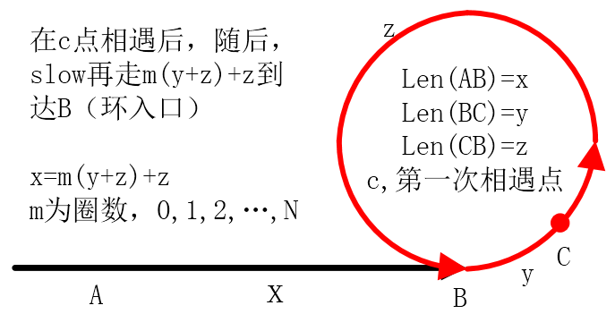

原文出处:本文由博客园博主wxwreal提供。
原文连接:https://www.cnblogs.com/wxwhnu/p/11429099.html
原文连接:https://www.cnblogs.com/wxwhnu/p/11429099.html
1 题目描述
给一个链表，若其中包含环，请找出该链表的环的入口结点，否则，输出null。
2 思路和方法

这是一个典型的链表中查找环的问题，基本思路是，首先设置两个快慢指针slow和fast，并且快指针fast每次前进两步，慢指针slow每次前进一步，假定当相遇的时候，设慢指针在环中走了y步，设环之外的部分长为x，环的长度
为y+z，则快指针一共走了：x+b1∗(y+z)+y步，（b1为快指针在环中走的圈数）慢指针一共走了：x+b2∗(y+z)+k步,（b2为快指针在环中走的圈数）因为快指针的速度是慢指针的两倍。
首先，pHead、pHead->next和pHead->next->next是否为空；其次，while（fast！=slow）循环快指针和慢指针各走2步和1步，直到相等时（表明有环）跳出循环。最后，用相遇点来寻找环的入口（在编程时使用在走z步的方法比较繁琐），方法是：设置原来的快指针fast为pHead，这次每次走一步，同时slow也走一步，当两个指针相遇时即找到环的入口B，相遇时两个指针走了x步。
3 C++核心代码


1 class Solution {
2 public:
3 ListNode* EntryNodeOfLoop(ListNode* pHead)
4 {
5 if(pHead==NULL || pHead->next==NULL || pHead->next->next==NULL)
6 return NULL;
7 ListNode* slow = pHead->next;
8 ListNode* fast = pHead->next->next;
9 while(slow != fast){
10 if(fast->next!=NULL && fast->next->next!=NULL){
11 slow = slow->next;
12 fast = fast->next->next;
13 }else{
14 return NULL;
15 }
16 }
17 fast = pHead;//为了减少指针变量，由于快指针已经没有用处，因此将其指定为新的慢指针
18 while(slow != fast){//到这里已经说明存在环，因此无需判断指针是否为空
19 slow = slow->next;
20 fast = fast->next;
21 }
22 return slow;
23 }
24 }; 1 class Solution {
2 public:
3 ListNode* EntryNodeOfLoop(ListNode* pHead)
4 {
5 set<ListNode*> s;
6 ListNode* node = pHead;
7 while(node!=NULL){
8 if(s.insert(node).second)
9 node = node->next;
10 else
11 return node;
12 }
13 return node;
14
15 }
16 };参考资料
https://blog.csdn.net/weixin_40271182/article/details/84309418
https://blog.csdn.net/HelloZEX/article/details/81087398